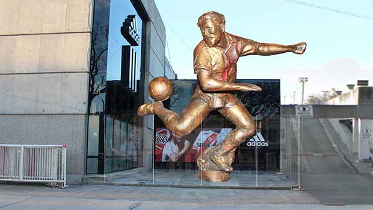

Goles
Ángel Labruna anotó más de 550 goles a lo largo de su carrera, destacándose como uno de los máximos goleadores del fútbol argentino.
Goles en clubes
Anotó 293 goles en 516 partidos oficiales con River Plate entre 1939 y 1959.
Goles en Superclásicos
Marcó 16 goles en Superclásicos frente a Boca Juniors, siendo el máximo goleador en la historia de este clásico.
Máximos goleadores
Máximo goleador histórico del Club Atlético River Plate.
Máximo goleador de los Superclásicos del fútbol argentino.
Segundo máximo goleador histórico de la Primera División Argentina (era profesional).
